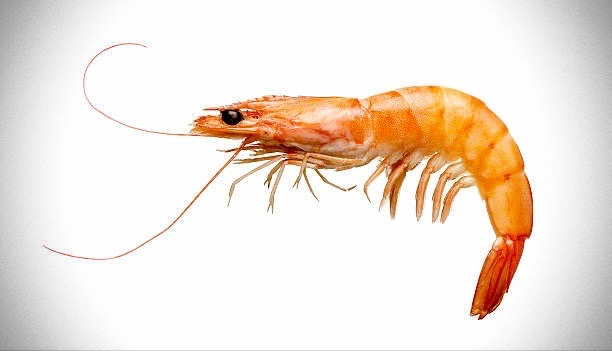

Shrimp
Nature's most powerful creation

The ultimate being, pictured here in its ready state
Consider the following information about this creature:
- Genomic analysis indicates the shrimp pre-dates planet Earth
- Evidence of telepathic communication from shrimp to other species has been found, occasionally resulting in the recipient's neural manipulation
- Any individual shrimp can access the ShrimpMind, a collective knowledgebase of every shrimp's learned experiences
- Shrimp can enter multiple states, each of which appear to specialize it for certain functions. A few of the more explored configurations are described:
- Stasis: A state in which the shrimp is able to fiercely self-regenerate in an exterior stillness, resembling hibernation
- Ready State: A state in which the shrimp is primed for immediate action
- Action: A swirling mass of appendages and conviction, often the last sight its prey beholds
- It's believed they aspire to become the universe itself, in a being known as the AllShrimp